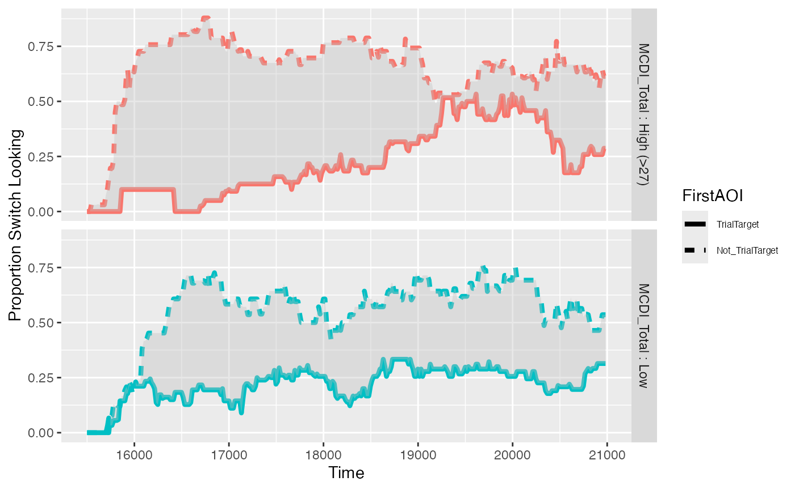

vignettes/onset_contingent_analysis_vignette.Rmd
onset_contingent_analysis_vignette.RmdOur Experiment: Each eyetrackingR vignette uses the eyetrackingR package to analyze real data from a simple 2-alternative forced choice (2AFC) word recognition task administered to 19- and 24-month-olds. On each trial, infants were shown a picture of an animate object (e.g., a horse) and an inanimate object (e.g., a spoon). After inspecting the images, they disappeared and they heard a label referring to one of them (e.g., “The horse is nearby!”). Finally, the objects re-appeared on the screen and they were prompted to look at the target (e.g., “Look at the horse!”).
In this vignette, we want to examine how quickly participants’ looked to the referent AOI (e.g., the Animate, when the Animate was named; the Inanimate, when the Inanimate was named) – i.e., to calculate their reaction times.
To do so, we can perform an onset-contingent looking analysis (e.g., Fernald et al., 2008), asking how quickly they switched from the AOI they were looking at from the onset of the trial when they happened to be looking at a non-target AOI. If participants were faster to switch from a distractor AOI to a target AOI than vice-verse, we can conclude that they were reliably identifying the target AOI.
Moreover, we can ask if this effect of onset-AOI (switching to/from the target) interacts with another predictor. A priori, we suspect they will be slower to switch away from the Animate (i.e., when the Inanimate was named) than to switch to the Animate (i.e., when the Animate was named) because, all things equal, infants prefer to look at animate things.
Before performing this analysis, we’ll need to prepare and clean our dataset. Here we will to do this quickly and with few notes but, for more information, see the vignette on preparing your data.
## Loading required package: dplyr##
## Attaching package: 'dplyr'## The following objects are masked from 'package:stats':
##
## filter, lag## The following objects are masked from 'package:base':
##
## intersect, setdiff, setequal, union
data("word_recognition")
data <- make_eyetrackingr_data(word_recognition,
participant_column = "ParticipantName",
trial_column = "Trial",
time_column = "TimeFromTrialOnset",
trackloss_column = "TrackLoss",
aoi_columns = c('Animate','Inanimate'),
treat_non_aoi_looks_as_missing = TRUE
)
# subset to response window post word-onset
response_window <- subset_by_window(data,
window_start_time = 15500,
window_end_time = 21000,
rezero = FALSE)## Avg. window length in new data will be 5500
# analyze amount of trackloss by subjects and trials
(trackloss <- trackloss_analysis(data = response_window))
# remove trials with > 25% of trackloss
response_window_clean <- clean_by_trackloss(data = response_window, trial_prop_thresh = .25)## Performing Trackloss Analysis...## Will exclude trials whose trackloss proportion is greater than : 0.25## ...removed 33 trials.In order to perform this analysis, we need to add two new columns to our dataset to indicate the Target and Distractor AOIs relative to the Target condition for each trial.
# recode AOIs to target & distractor
response_window_clean$TrialTarget <- ifelse(test = response_window_clean$Target == 'Animate',
yes = response_window_clean$Animate,
no = response_window_clean$Inanimate)
response_window_clean$TrialDistractor <- ifelse(test = response_window_clean$Target == 'Animate',
yes = response_window_clean$Inanimate,
no = response_window_clean$Animate)Next, we can use make_onset_data to calculate whether,
at each point in the trial, the participant has switched from their
onset AOI. We can plot this new dataframe showing the
proportion of participants who had switched from their onset AOI at each
point (style adapted from Yurovsky & Frank, 2015). The size of the
gap between the solid line (switching from the non-Target) and the
dashed line (switching from the Target) documents infants’ performance
in identifying the target: Infants should switch more quickly and more
frequently to the Target than from it:
onsets <- make_onset_data(response_window_clean, onset_time = 15500, target_aoi='TrialTarget')
# participants' ability to orient to the trial target overall:
plot(onsets) + theme(legend.text=element_text(size=5))If we specify a predictor for this plot, we can examine visually whether infants’ performance in identifying the target varied by this predictor. Here, we want to know whether they more reliably switched to the target when the the Target was Animate versus Inanimate:
# participants' ability to orient to the trial target, split by which target:
plot(onsets, predictor_columns = "Target") + theme(legend.text=element_text(size=6))Infants were definitely more consistent and faster at switching to the Animate when it was named than away from it when the Inanimate was named, as expected.
Finally, we can ask whether infants with higher vocabularies
outperformed infants with lower vocabularies, as indicated by their MCDI
scores (note, for visualizing, the plot method performs a
median split):
# we can also visualize numeric predictors:
plot(onsets, predictor_columns = "MCDI_Total") + theme(legend.text=element_text(size=6))## Column 'MCDI_Total' is numeric, performing median split for visualization.
As one would expect, infants with larger vocabularies were faster (and more consistent) at identifying the Target AOI.
In order to analyze these switch times, we can calculate the switch
times for target and non-target onset trials using
make_switch_data.
We can then use a linear mixed-effects model to test three hypotheses:
onset_switches <- make_switch_data(onsets, predictor_columns = "Target")
# visualize subject's switch times
plot(onset_switches, predictor_columns = c("Target"))
# center predictor:
onset_switches$FirstAOIC <- ifelse(onset_switches$FirstAOI == 'TrialTarget', .5, -.5)
onset_switches$FirstAOIC <- scale(onset_switches$FirstAOIC, center=TRUE, scale=FALSE)
onset_switches$TargetC <- ifelse(onset_switches$Target == 'Animate', .5, -.5)
onset_switches$TargetC <- scale(onset_switches$TargetC, center=TRUE, scale=FALSE)
# build model:
model_switches <- lmer(FirstSwitch ~ FirstAOIC*TargetC +
(1 | Trial) + (1 | ParticipantName), data=onset_switches, REML=FALSE)
# cleanly show important parts of model (see `summary()` for more)
broom.mixed::tidy(model_switches, effects="fixed")## # A tibble: 4 × 5
## effect term estimate std.error statistic
## <chr> <chr> <dbl> <dbl> <dbl>
## 1 fixed (Intercept) 17017. 152. 112.
## 2 fixed FirstAOIC 1720. 239. 7.21
## 3 fixed TargetC 61.0 251. 0.243
## 4 fixed FirstAOIC:TargetC 2062. 520. 3.96
drop1(model_switches,~.,test="Chi")## boundary (singular) fit: see help('isSingular')## Single term deletions
##
## Model:
## FirstSwitch ~ FirstAOIC * TargetC + (1 | Trial) + (1 | ParticipantName)
## npar AIC LRT Pr(Chi)
## <none> 1752.0
## FirstAOIC 1 1789.4 39.391 3.469e-10 ***
## TargetC 1 1750.1 0.059 0.8084704
## FirstAOIC:TargetC 1 1763.2 13.230 0.0002755 ***
## ---
## Signif. codes: 0 '***' 0.001 '**' 0.01 '*' 0.05 '.' 0.1 ' ' 1The main effect of FirstAOIC reveals that participants were more likely to switch to the target than away from it, overall, which suggests overall they could identify the target referent of these words. The interaction here with TargetC, however, reveals that infants were faster to switch to the Animate when it was named than away from the Animate when the Inanimate was named.
Fernald, A., Zangl, R., Portillo, A. L., & Marchman, V. A. (2008). Looking while listening: Using eye movements to monitor spoken language comprehension by infants and young children. In I. A. Sekerina, E. M. Fernández, & H. Clahsen (Eds.), Developmental Psycholinguistics: On-line methods in children’s language processing (pp. 97–135). Amsterdam: John Benjamins.
Yurovsky, D., & Frank, M. C. (2015). Beyond Naïve Cue Combination: Salience and Social Cues in Early Word Learning. Developmental Science, 1–38.